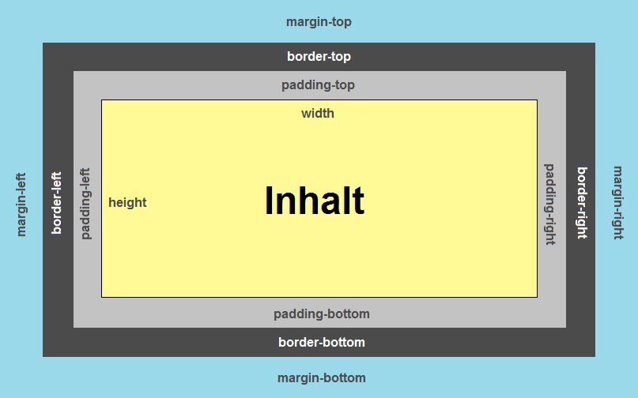

CSS (Cascading Style Sheets) ist eine Stylesheet-Sprache, die verwendet wird, um das Aussehen und die Gestaltung von HTML-Dokumenten zu definieren.
CSS bestimmt, wie eine Webseite aussieht – es steuert Farben, Schriftarten, Abstände, Layouts und mehr.
Inline-CSS: Nützlich für einzelne, schnelle Änderungen / Unübersichtlich und schwer wartbar
Internes CSS: Nützlich für kleine Webseiten oder einzelne Seiten / Vermischt HTML und CSS → Unübersichtlich bei großen Projekten
Externe CSS-Datei: Trennung von Inhalt (HTML) und Design (CSS) / Mehrere HTML-Seiten können dasselbe CSS verwenden
Eine CSS-Datei wird mit dem <link>-Tag im <head>-Bereich eines HTML-Dokuments eingebunden.
Beispiel:
<head>
<link rel="stylesheet" href="styles.css">
</head>
Selektoren in CSS bestimmen, welche HTML-Elemente von den definierten Stilregeln betroffen sind. Sie ermöglichen es, gezielt einzelne oder mehrere Elemente zu stylen.
-> Beispiele:
- Element-Selektor:
- Klassen-Selektor (.)
- ID-Selektor (#)
p {
color: blue;
}
Ergebnis: Alle <p>-Elemente werden blau.
.special {
color: red;
}
Ergebnis: Alle Elemente mit class="special" werden rot.
#header {
font-size: 24px;
}
Ergebnis: Nur dieses <h1>-Element wird beeinflusst.
Inline-Stil > Internes CSS > Externes CSS
#ID > .class > Tag
Im Code, wenn zwei CSS-Regeln die gleiche Spezifität haben und auf dasselbe Element zutreffen, dann gewinnt die Regel, die weiter unten in der CSS-Datei steht.
!important überschreibt alle anderen Regeln

-> CSS Selectors: CSS Selectors Cheatsheet
-> Farben mit color (Textfarbe):
p {
color: red; /* Name */
}
-> Hintergrundfarben mit background-color:
div {
background-color: lightblue;
}
-> Hintergrundfarben mit background-color:
div {
background-color: rgba(0, 0, 255, 0.3); /* Blau mit 30% Transparenz */
}
Das CSS-Box-Modell beschreibt, wie HTML-Elemente als rechteckige Boxen dargestellt werden. Jede Box besteht aus vier Bereichen:
Content (Inhalt) → Der eigentliche Inhalt, z. B. Text oder ein Bild
Padding (Innenabstand) → Abstand zwischen Inhalt und Rahmen
Border (Rahmen) → Umrandung des Elements
Margin (Außenabstand) → Abstand zwischen dem Element und anderen Elementen
Jedes HTML-Element wird als Box dargestellt, die sich aus den oben genannten Bereichen zusammensetzt.
-> Box-Modell Darstellung:
-> Beispiel: Interaktives CSS-Box-Modell KI Generiert
-> Beispiel: Interaktives CSS-Box-Modell Externe Seite